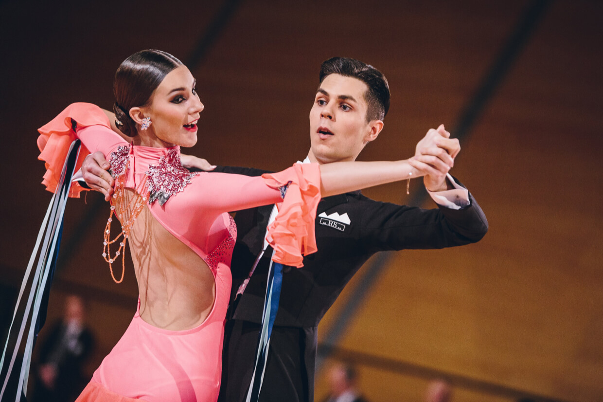

CSTS.CZ
CSTS.CZ E-SHOP
E-SHOP
 SOUTĚŽE A VÝSLEDKY
SOUTĚŽE A VÝSLEDKY
Titulek obecné subpage
Mezi tanečníky a tanečnicemi, kteří doprovodí desítku známých osobností, je i Dominik Vodička. Ten bude obhajovat loňský titul krále tanečního parketu, který získal po boku herečky Dariji Pavlovičové. Nebude chybět ani Martin Prágr, který letos soutěží v reality show Survivor.
Mezi tanečníky a tanečnicemi, kteří doprovodí desítku známých osobností, je i Dominik Vodička. Ten bude obhajovat loňský titul krále tanečního parketu, který získal po boku herečky Dariji Pavlovičové. Nebude chybět ani Martin Prágr, který letos soutěží v reality show Survivor.
Subtitulek obecné subpage
Mezi tanečníky a tanečnicemi, kteří doprovodí desítku známých osobností, je i Dominik Vodička. Ten bude obhajovat loňský titul krále tanečního parketu, který získal po boku herečky Dariji Pavlovičové. Nebude chybět ani Martin Prágr, který letos soutěží v reality show Survivor.
Malý subtitulek obecné subpage
Mezi tanečníky a tanečnicemi, kteří doprovodí desítku známých osobností, je i Dominik Vodička. Ten bude obhajovat loňský titul krále tanečního parketu, který získal po boku herečky Dariji Pavlovičové. Nebude chybět ani Martin Prágr, který letos soutěží v reality show Survivor.
| Sídlo: | Český svaz tanečního sportu U družstva Tempo 264/10 142 00 Praha |
| IČO: | 00443077 |

Title h2
Title h3
Title h4
Title h5
Title h6
Můžete být konkrétnější?
Mám zázemí a půlku rodiny v Liberci, takže i blízkost k domovu.
Rozhodla i komunikace napřímo. V Boleslavi mi nemazali med kolem
pusy a řekli, co se ode mě očekává. S Vencou Nedorostem jsme přes
trenéry řešili moji roli. Nechtěl bych tu být jen tak, abych pak
nedokázal obstát.
Jaká tedy bude vaše úloha v týmu?
Je tu hodně ofenzivního útočníků, hodně hráčů, kteří dávají góly.
O ně se musí někdo postarat, někoho musí mít za zády. Musí se
cítit bezpečně, aby dobře plnili svoji roli. Do
oslabení se pak ode mě očekává bolavá tvrdá práce, jako je
blokování střel. Nejsem tu od toho, abych každý zápas shazoval
rukavice. Nechci tým oslabovat, chci být co nejvíce prospěšný.
| První sloupec | Druhý sloupec | Třetí a poslední sloupec |
|---|---|---|
| Obsah prvního sloupce | Další obsah sloupce | Obsah třetího a posledního sloupce, který je tentokrát o něco delší. |
| Obsah prvního sloupce | Další obsah sloupce | Obsah třetího a posledního sloupce, který je tentokrát o něco delší. |
| Obsah prvního sloupce | Další obsah sloupce | Obsah třetího a posledního sloupce, který je tentokrát o něco delší. |
Jak se tedy David Štich za čtyři roky od odchodu z Bruslařského
klubu změnil?
Chtěl bych říct, že je rozumnější, ale po posledním výstupu v
Mladé Boleslavi to asi tak nevypadá. (smích) Nevěděl jsem, že
tisková mluvčí Boleslavi stojí mezi střídačkami, prostě jsem ji v
tom zatmění neviděl. Naštěstí tu ránu hokejkou ode mě neschytala,
i když to bylo těsné. Nebyl to ani úmysl. Kdo mě zná mimo led, tak
ví, že bych nic takového neudělal. Blbosti už nedělám každý zápas.
Sem tam blikanec je, to k hokeji patří. Myslím si, že si v kabině
umím vybudovat respekt a pronést nějaká slova. Hlavně se snažím
nastupující generaci pomáhat a předávat zkušenosti.
Do Mladé Boleslavi přišel i Tomáš Šmerha, který poznal vaši hru
v semifinále play off. Už jste si to vyříkali?
Co se stane na ledě, zůstane na ledě, stejně tak v kabině. Po
zápase se zajde na pivo a je urovnáno. Na pivu bychom se bavili
jako dva normální lidi. Když jsme to spolu řešili, tak jsme se
zasmáli, prohodili nějaký žertík a tím to končí. Myslím si, že já
ani Šmerhič v sobě nic neneseme. Jak na vás zatím působí tým
Bruslařů?Kádr se tvoří velmi dobrý. Je to mladší, kvalitní a
bruslivý tým, který má do sezóny velký potenciál. Věřím, že si
sedneme v kabině i na ledě, budeme skvělá parta a přeneseme to do
zápasů.
Jak podle vás tenhle tým může dojít daleko?
Nechci to před sezonou komentovat. Půjde se zápas od zápasu. V
každém utkání budeme chtít sbírat body a od toho se bude sezóna
vyvíjet.